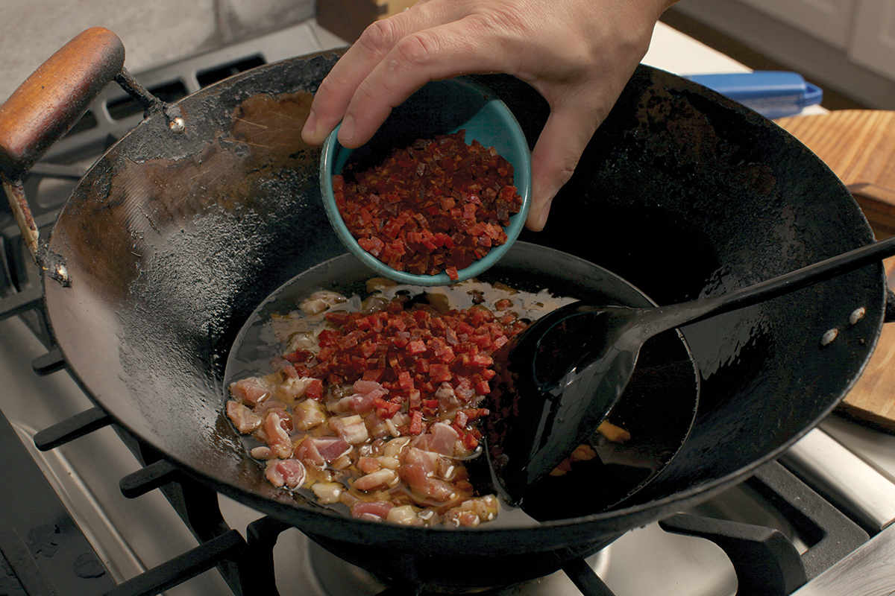
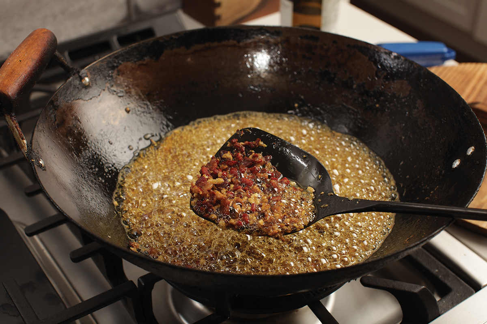
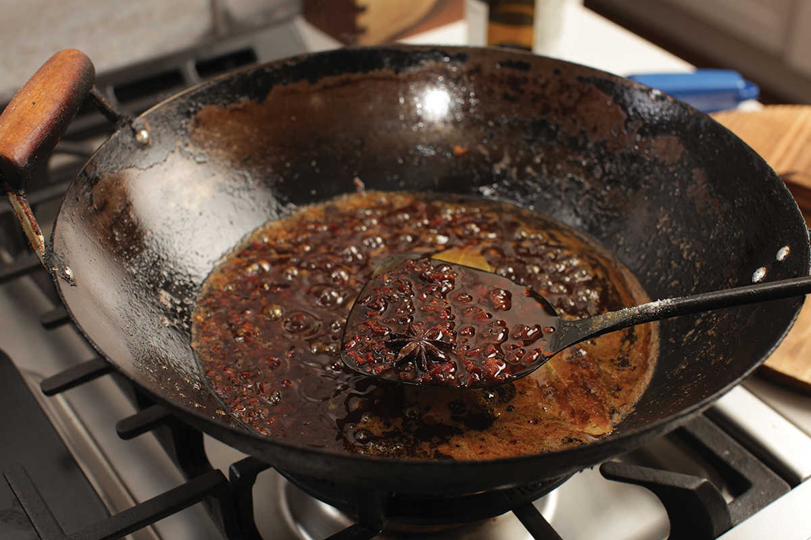
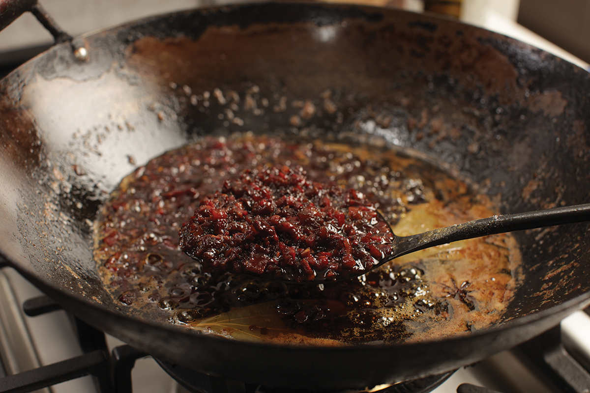

UMAMI OIL (“XO PEPPERONI SAUCE”)
|
Yield Makes about 2 cups |
Active Time 45 minutes Total Time 45 minutes |
Mincing the pepperoni and bacon by hand is easy if you buy it presliced. You can make the job even easier by placing them in the freezer for 15 minutes before cutting. Alternatively, if you prefer the quality of stick pepperoni and slab bacon (I do), you can use a food processor: freeze the pepperoni and bacon solid, then push it through a food processor fitted with a large-holed grating disk.
If using chorizo, make sure to buy Spanish-style dry-cured chorizo, which will have a salami-like firm texture, not to be confused with fresh Mexican-style chorizo or other cooked Latin American sausages that may be labeled “chorizo.”
If you don’t have a food processor with a grating attachment, you can grate stick pepperoni and slab bacon by hand on a box grater (I strongly suggest wearing cut-resistant gloves if attempting this—slippery meat and a box grater can lead to accidents otherwise) or finely mince it with a knife.
I like using Korean chile flakes for this oil because they offer lots of flavor without an overwhelming amount of heat. For more heat, feel free to add ground Sichuan heaven-facing, er jing tao, or Thai chile flakes to taste.
XO sauce is a modern condiment created by Hong Kong chefs that combines a ton of ingredients rich in the glutamates and inosinic acids that trigger our sense of savoriness. It’s named after XO cognac only because of its association with opulence. In the kitchen at Clio, I’d make a big batch of it a few times per month, carefully rehydrating and shredding dried scallops and shrimp, chopping up the rinds of Spanish Iberico ham (Hong Kong versions would use Chinese Jinhua ham), then cooking it all down in oil with a host of aromatics until it reduced into a sticky, oily, intensely flavored mixture.
At home where I’ve rarely got dried scallops but always have a stick of pepperoni on hand, I’ve adapted the same basic technique, giving it a distinctly smoky paprika-scented aroma that is killer on noodles. In addition, I add a few smashed anchovies for their salty umami kick, some dried porcini mushrooms, and a number of common XO sauce ingredients, like soy sauce, sugar, fish sauce, oyster sauce, and Shaoxing wine.
Making this sauce is pretty straightforward, though a little time consuming. The good news is that the recipe makes quite a bit of sauce, and stored in a sealed jar in the fridge, it keeps virtually forever. That is, if you don’t do what I do and sneak a big heaping spoonful straight out of the jar at bedtime.
INGREDIENTS
1 cup (240 ml) homemade or store-bought low-sodium chicken stock or dashi
½ ounce (15 g) dried porcini, shiitake, or maitake mushrooms
6 medium garlic cloves (15 to 20 g), smashed with the flat side of a knife
One 2-inch piece fresh ginger, cut into coin-sized disks
2 medium shallots (about 3 ounces/90 g), roughly chopped
4 ounces (120 g) pepperoni or Spanish dry-cured chorizo, very finely minced (see Notes)
4 ounces (120 g) bacon or pancetta, very finely minced (see Notes)
¾ cup (180 ml) vegetable or canola oil
6 oil-packed anchovy fillets, finely minced
1 tablespoon ground Korean chile flakes (gochugaru; see Notes)
2 dried bay leaves
1 whole star anise
½ cup (120 ml) Shaoxing wine
2 tablespoons (45 ml) oyster sauce
1 tablespoon (30 ml) fish sauce
2 tablespoons (30 ml) light soy sauce or shoyu
2 tablespoons (24 g) dark brown sugar





DIRECTIONS
1 Heat the stock in a small saucepan on the stove or in a microwave-safe container until steaming hot, then add the dried mushrooms, remove from the heat, and allow the mushrooms to rest for 5 minutes to rehydrate. Pick the mushrooms out of the chicken stock (reserve the stock) and roughly chop them.
2 Place the mushrooms, garlic, ginger, and shallots in the bowl of a food processor or mini-chopper and pulse until finely chopped but not pureed, about 12 short pulses. (Alternatively, chop all those ingredients by hand on a cutting board until finely chopped.)
3 Combine the pepperoni, bacon, and oil in a wok and heat over medium-high heat. Cook, stirring, as the bacon and pepperoni start to bubble. Continue cooking, stirring frequently, until the bacon and pepperoni are starting to turn crisp and golden brown, about 8 minutes total, maintaining a steady bubble throughout the cooking process. Add the anchovies, stir to combine, and continue to cook for 1 minute, until the bacon and pepperoni are mostly crisp.
4 Add the garlic/ginger/shallot/mushroom mixture and cook, stirring constantly, until the vegetables turn light golden brown, about 2 minutes. Do not let them overbrown at this stage or they will turn bitter. Add the chile flakes, bay leaves, and star anise and cook, stirring, until aromatic, about 30 seconds.
5 Immediately add the Shaoxing wine, stir thoroughly, and allow to simmer for 30 seconds. Add the reserved chicken stock, the oyster sauce, fish sauce, soy sauce, and brown sugar. Reduce the heat to medium and continue to cook, stirring occasionally to prevent stuff from burning on the bottom, until the liquid no longer looks watery or soupy and the sauce has a thick, jam-like texture with a layer of oil on top, about 15 minutes. Remove from the heat and allow to cool. Discard the bay leaves and star anise, transfer to sealable containers, and store in the refrigerator for up to several months.